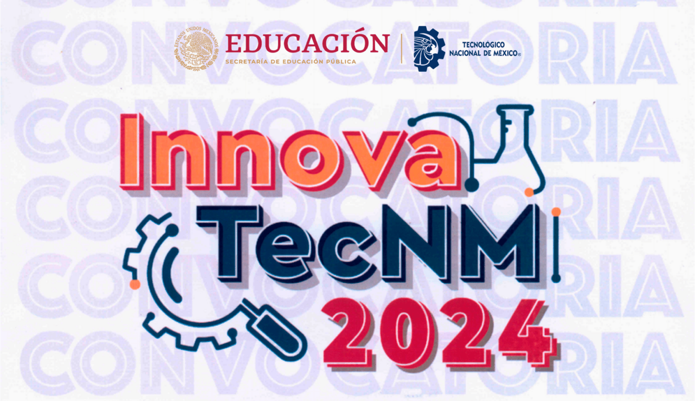
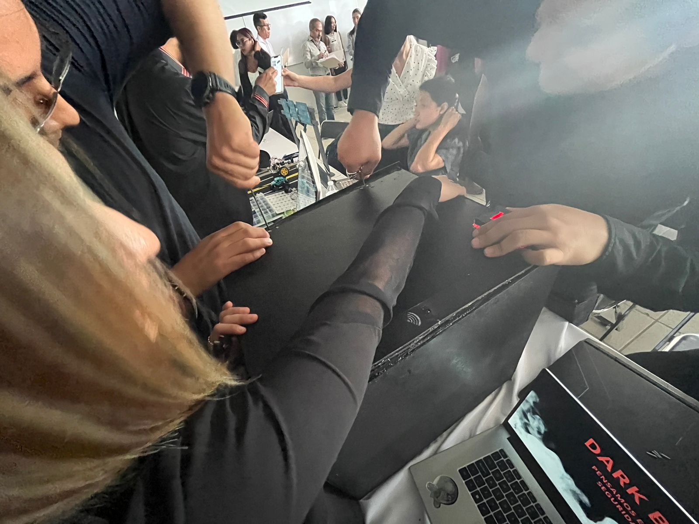
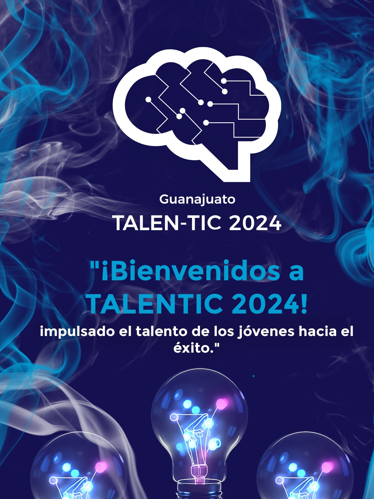
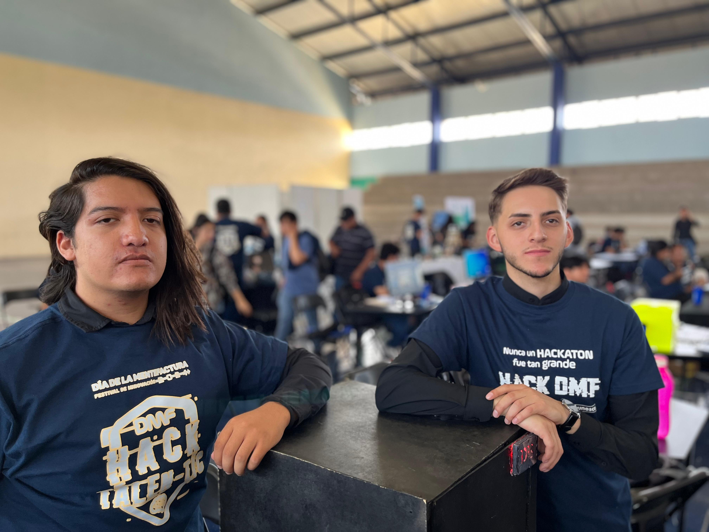
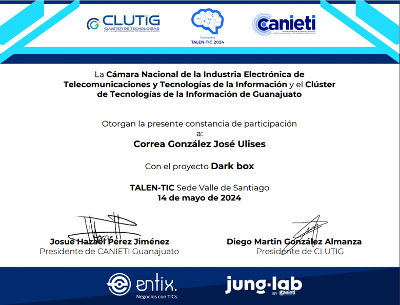
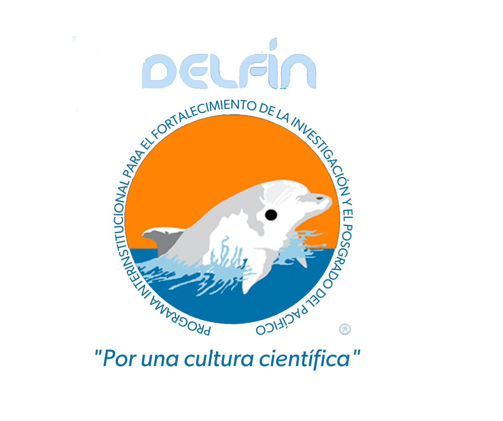
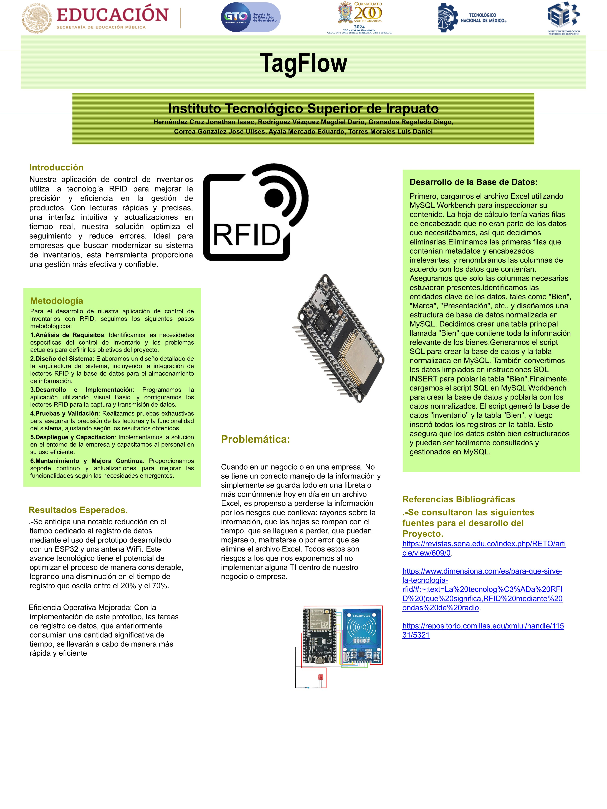

Proyectos Destacados
Estos proyectos fueron presentados en distintos eventos académicos y tecnológicos:
- Verano de Investigación Científica Delfín: Programa nacional que promueve la investigación en jóvenes universitarios, colaborando durante el verano con investigadores de instituciones reconocidas.
- InnovaTecNM: Concurso nacional del Tecnológico Nacional de México que impulsa el desarrollo de proyectos innovadores con aplicación en el entorno social e industrial.
- TalenTIC: Evento tecnológico universitario donde estudiantes presentan soluciones basadas en Tecnologías de la Información y Comunicación con enfoque en impacto y funcionalidad.
2024: Caja Fuerte de Doble Verificación: DarkBox
Proyecto de seguridad basado en una interfaz web combinada con una tarjeta RFID para doble verificación. La caja fuerte se abre al ingresar la contraseña correcta y pasar una tarjeta autorizada. Además, el UID de la tarjeta permite cambiar la contraseña.
Participó en: TalenTIC 2024 e InnovaTec 2024





Sistema de Rastreabilidad de Piezas con RFID: TagFlow
Proyecto enfocado en implementar un sistema inteligente de rastreo de piezas mediante tecnología RFID. El sistema permite registrar automáticamente la entrada y salida de objetos mediante la lectura de sus UIDs, eliminando la necesidad de capturas manuales y mejorando la eficiencia operativa.
Participó en: Verano Delfín 2024

